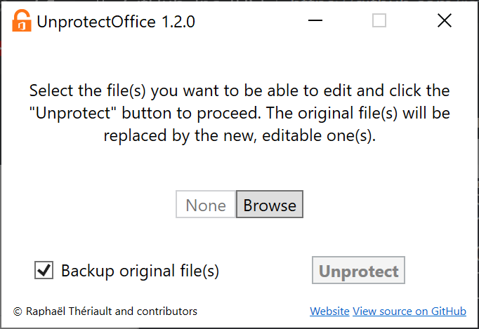

Features
UnlockOffice lets you remove any write protection from an Office document with a couple clicks, while keeping its original formatting.
- Standalone. You don't need to install it, just download and run it. You can event put it on a USB drive and use it anywhere.
- Password resistant. It doesn't care if the document needs a password to be edited, it just removes it.
- Small. It uses native .NET features and is even smaller than some Office documents.
- Fast. It only does what it needs to do, so the process is extremely fast.
- Easy to use. There are 3 buttons.
- Open source. Anyone can see how it works, reuse it or make it better.
Supported formats
UnlockOffice supports Word documents and will support PowerPoint and Excel documents soon.

Word (.docx & .docm)

PowerPoint (.pptx & .pptm)
Excel (.xlsx & .xlsm)
Screenshot
How does it look ?

How it works
A small description of the unprotecting process
The document is extracted in a temporary directory. The program check for lines enabling write protection in every file where they may appear and deletes them. The document is then compressed back to its original format and the temporary directory is deleted. The old file is replaced by the new, editable one and the old one is renamed or deleted.